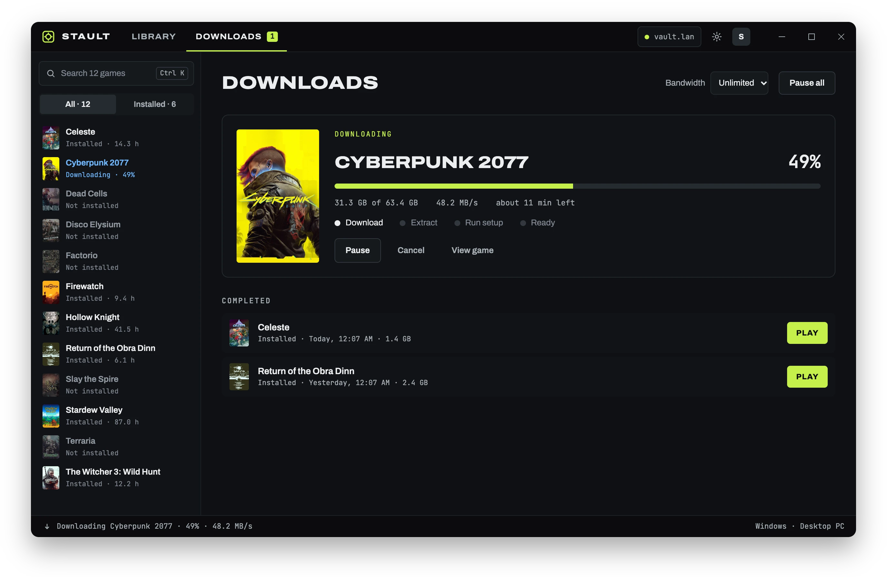

Install and play in a few clicks
Pick a game, press Install, then Play. Stault downloads, unpacks and sets up the game for you.
A Steam-style desktop client for your self-hosted game library. Browse, install, play and sync saves on Windows, macOS and Linux.

Pick a game, press Install, then Play. Stault downloads, unpacks and sets up the game for you.
On Linux, Stault plays your Windows games through Proton and sets it up for you.
Your latest save is downloaded before you play and uploaded when you quit, so you can pick up on another device. If two devices changed it, Stault asks which to keep.
If you've used Steam, you already know your way around: recent games up front, search across your library, and a page for every game.


You need a GameVault server, version 17.0 or newer.
brew install --cask mosattler/tap/staultOr download it from the latest release.
curl -fsSL https://github.com/MoSattler/stault/releases/latest/download/linux-x64-Stault-Setup.tar.gz | tar -xz -C /tmp && /tmp/installerInstalls Stault for your user, without root. Run it again to update.